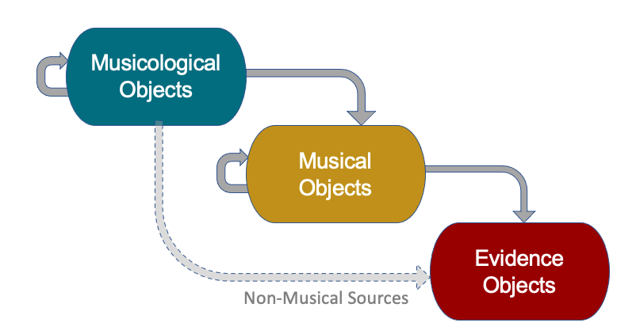

>>>>> gd2md-html alert: ERRORs: 11; WARNINGs: 1; ALERTS: 15.
- See top comment block for details on ERRORs and WARNINGs.
- In the converted Markdown or HTML, search for inline alerts that start with >>>>> gd2md-html alert: for specific instances that need correction.
Links to alert messages:
alert1
alert2
alert3
alert4
alert5
alert6
alert7
alert8
alert9
alert10
alert11
alert12
alert13
alert14
alert15
>>>>> PLEASE check and correct alert issues and delete this message and the inline alerts.
V. 0.2 – 22 Sep 2022
Beethoven in the House: Model documentation
This document provides an overview of a structural model that aims to support the association of multiple source materials and the development of comparative musicological research, as designed for use in the Beethoven in the House research project. Although the model has, thus far, only been assessed within this project, we anticipate wider applicability encompassing other sources and musicological investigations.
Model
We present our multi-layered, conceptual model for associating musical source materials to musicological arguments. We describe our proposal for operationalizing these concepts through a framework for musical annotation. Briefly stated, this model shows how portions of digitised data in various files and formats can be identified, selected, labelled, and compared.
The following chart presents a top-down view.

Each layer in the model corresponds to one of the three main categories of objects that represent our data:
- Evidence Objects – digitised sources;
- Musical Objects – user-selected musical elements and their aggregates in various relevant combinations; and
- Musicological Objects – their musicological labelling and scholarly commentary.
Prior to primary scholarly activity, in this case research commentary involving multiple sources, a series of steps must be completed including identification of available resources, selection of items of interest, and addressing locations in these sources. The two lower levels of the model are therefore, generally speaking, concerned with collecting the desired data, while the upper level involves critical judgement.
A bottom-up introduction to these structures follows.
EVIDENCE OBJECTS
These are digitised materials that will be used for the musicological
investigation. They include images of musical scores and the MEI encodings
(stored in project repositories and digital libraries), music recordings (in the
form of audio files and digital video), text documents, and links to secondary
source materials, such as books and articles.
>>>>>
gd2md-html alert: inline image link here (to images/image2.png). Store image on
your image server and adjust path/filename/extension if necessary.
(Back to top)(Next
alert)
>>>>>

Resources refer to
complete documents or files which can be unambiguously identified using a
Universal Resource Identifier (URI). Typically we would expect to be able to
access these.
Examples
References are places
or regions within a Resource, and are also identified using
URIs.
Examples
-
MUSICAL OBJECTS
These refer to the music that will be investigated, be it in whole or in part,
in notated, image, audio or video format. The types of musical objects refer to
the various levels of collection and abstraction pertinent to the musical
research, closely following FRBR principles. FRBR terminology is used whenever
possible, although there are particularities pertaining to the domain of music
which we reflect through our use of FRBR subclasses. Any of these musical
objects may be the target of an Observation.
>>>>>
gd2md-html alert: inline image link here (to images/image3.png). Store image on
your image server and adjust path/filename/extension if necessary.
(Back to top)(Next
alert)
>>>>>

A Selection is the
lowest level of grouping musical references. It contains the complete set of
URIs for the individual components of a musical extract, be that a single
resource, or multiple resources derived from a single source of material, such
as a set of orchestral parts. It is a subclass of
frbr:Manifestation because it gathers together digitised
embodiments of a musical source. Every
Selection must be part of an Extract because it is
assumed that every piece potentially has at least two manifestations: one
written and one performed.
Examples
- an area on the surface of the score
- part of a music audio/video file
- a passage in the instrumental parts of the same musical score
➜ See
>>>>>
gd2md-html alert: undefined internal link (link text: " Appendix: A and B"). Did
you generate a TOC?
(Back to top)(Next alert)
>>>>>
Appendix: A and B for RDF examples
An Extract collects
various instances of a feature or passage. It is used to gather
Selections from different media representing a musical source (this
may mean multiple manifestations – for example, a scan of a particular edition
and a recording based on this edition). Extracts may be grouped together as
ma:setting of a MusicalMaterial (see below), a unique
musical expression.
Examples
- a single
Selection
- a combination of
Selections from different sources, such as the
XML IDs of consecutive measures in an MEI file and the timestamps of its
corresponding section in an audio file
MusicalMaterial is an
abstract entity that refers to the musical concept behind a music extract, such
as a passage, phrase or fragment. It is primarily used to group a particular
aspect of a musical extract with an analogous – or what we are calling a
parallel – moment or passage in distinct versions of a musical work.
MusicalMaterial represents a single musical thought, independent of
its various manifestations in different arrangements or recordings (or, in a
variation set, within a single variation).
Since it is an abstraction, MusicalMaterial does not necessarily
have a notated expression. It can correspond to just a “core” musical thought or
be identical with one of its expressions, according to the scholar’s
interpretation of the music. MusicalMaterial can refer to any
segment of music, independent of formal structures. It is a subclass of
frbr:Expression because it represents the realisation of a
MusicalIdea.
Examples
- the recapitulation section in two arrangements of the same work
- a citation from a piece that is featured in another piece: the Dies Irae
theme in the 4th movement of Berlioz’s Symphonie fantastique
MusicalIdea is an
abstract entity that refers to the musical thought behind a recurring musical
structure, such as a theme or a motiv. Although it is similar to
MusicalMaterial in the sense that it is an abstraction,
MusicalIdea primarily groups elements that can be found not only in
parallel passages in different musical pieces but also within a single musical
piece, and consequently has greater affinity with established musical
structures. As MusicalMaterial, MusicalIdea is
abstract and does not require a notated form. It is a subclass of frbr:Work
because it is an idealised “seed” of its multiple expressions throughout a
musical piece.
MusicalIdeas, as abstractions, must be realised in the form of
MusicalMaterial. Even if the MusicalMaterial only
occurs in one version, it represents the concept behind a passage, and could
recur (i.e. a second expression of the same MusicalIdea always
potentially exists).
Examples
- the entries of a subject in a fugue
- a motiv that is repeated and developed in a sonata-form piece
-
MUSICOLOGICAL OBJECTS
Whereas the previous layers describe and structure musicological evidence,
Musicological Objects enable us to document musicological research. These
objects are used to describe, compare and record historical context associated
with the collected musical objects, as well as to present hypotheses, link them
to non-musical sources and make scholarly commentary. This is accomplished using
the Web Annotation
standard, capturing annotations along with their motivation and provenance.
>>>>>
gd2md-html alert: inline image link here (to images/image4.png). Store image on
your image server and adjust path/filename/extension if necessary.
(Back to top)(Next
alert)
>>>>>

Observations usually
contain a simple textual remark that targets a musical object. In most cases, it
will be used to label such objects or to present one of their relevant features.
Observations aim to be objective, non-controversial, or traditional
descriptions, so that they can be reused.
Observations might also target References of
non-musical objects relevant to the research, such as letters (as text or as
image) or historical newspaper advertisements.
Examples
- a label: “This is the theme A of this sonata-form movement.”
- something notable: “There is a fff (fortississimo) marking here.”
- a description: “The development section starts with bassoon and oboe playing
the main motiv.”
Relationships are used
to juxtapose more than one musical object by connecting
Observations, Commentaries and other
Relationships. They also aim to be a simple text remark, usually
noting a commonality, a substitution, an addition or a deletion between
Observations. More complex details, such as the reason for a
particular change, are recorded in Commentaries.
Examples
- a comparison: “The fff (fortississimo) marking in version A was
substituted by an ff (fortissimo) in version B.”
- noting a common pattern: “The fff to ff substitution
occurs in these three passages.”
- a deletion: “The introduction was suppressed in version B.”
Commentaries are used
to make more complex comparisons, bring attention to relevant aspects of the
music and to present hypotheses to explain any differences observed.
Commentaries can also present historical or analytical reflections
informed by academic research, including pointers to external sources and
references.
Examples
- a comparison: “The bassoon part in the orchestra version has staccatos that
were substituted by a pizzicato in the violoncello in the piano trio version.
This represents a deliberate change of articulation since the violoncello is
capable of playing it as written in the orchestra version.”
- a notable event: “At this time, fff markings were absolutely rare.
They were probably introduced in the musical vocabulary by Beethoven himself,
and even then they figure only in three of his works (see SHEER 1998, 361).”
- a hypothesis: “This substitution of staccatos by pizzicatos may have been
done due to the change in instrumentation.”
➜ See
>>>>>
gd2md-html alert: undefined internal link (link text: " Appendix: C"). Did you
generate a TOC?
(Back to top)(Next alert)
>>>>>
Appendix: C for RDF examples
Appendix: RDF examples
Example A: Selection from Audio and Score
bith:bassoonStaccatoSelection a bithTerms:Selection ;
frbr:part
bith:C93-30_Partitur.mei#staff-36-fg ,
bith:C93-30_Partitur.mei#staff-37-fg ,
...
bith:C93-30_Partitur.mei#staff-44-fg .
bith:bassoonStaccatoSelectionMackerras a bithTerms:Selection ;
frbr:part bith:MackerrasLvbOp93.mp3#t=45,60 .
Example B: Musical Material, Extracts and Selections from the annotation
environment
TBA
Example C: Musicological layer [e.g. fff]
TBA
Glossary
Musical Source: a unique edition of a musical work. It can be
made up of a single score (e.g. a piano solo piece) or a collection of scores
(e.g. a conductor’s score plus each instrument part in an orchestral piece). For
the same work, a manuscript, a printed first edition and a reprint constitute
three different musical sources. However, two identical digitised scores can
refer to a single musical source, although they are different resources.
{kind=link}